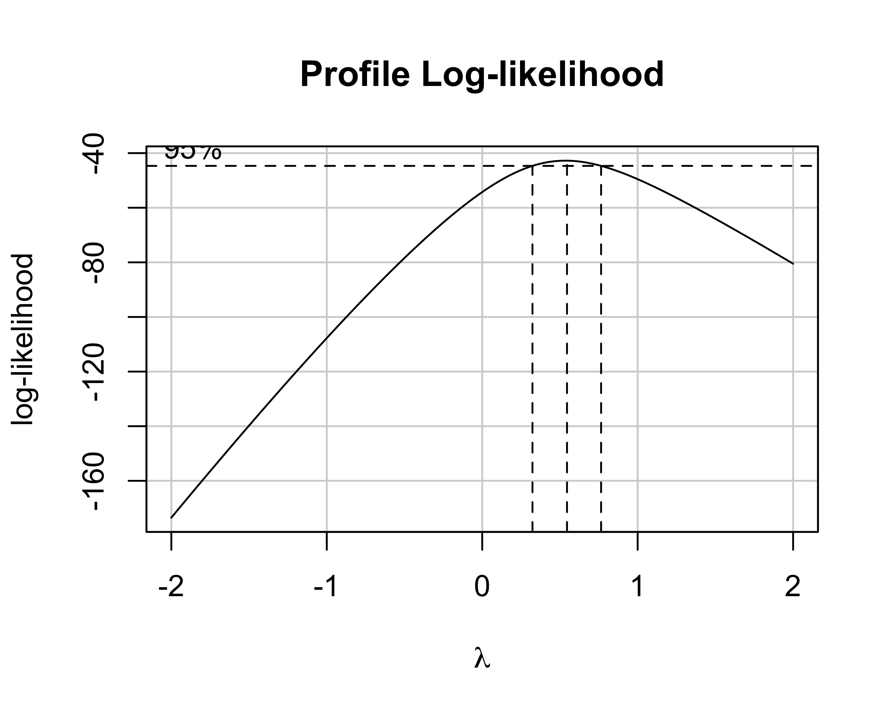

Design of Experiments
Analisi Dati e Statistica, 2024–25

Paolo Bosetti
Università di Trento, Dipartimento di Ingegneria Industriale
Ultimo aggiornamento: 24/03/2025
Design (and Analysis) of Experiments
\(\renewcommand{\hat}[1]{\widehat{#1}}\) \(\renewcommand{\tilde}[1]{\widetilde{#1}}\) \(\renewcommand{\theta}{\vartheta}\)
Gli esperimenti industriali spesso coinvolgono numerosi fattori corrispondenti a modelli con regressori multipli molto complessi
È quindi necessario minimizzare il numero di trattamenti e, quindi, il costo dell’esperimento, a parità di informazioni ottenute
Gli esperimenti devono poi essere analizzati con un approccio statistico
Esperimento industriale o esperimento scientifico?
Un esperimento scientifico viene generalmente condotto allo scopo di supportare o confutare una teoria
- è sempre basato su un modello teorico da verificare
- spesso il modello si focalizza sull’effetto di un numero limitato di fattori
In campo industriale spesso ciò non è possibile:
- spesso un modello teorico per l’oggetto dell’esperimento non è disponibile per motivi scientifici, tecnici o pratici
- l’interazione tra più fattori è spesso ciò che più interessa
Ai fini pratici, la progettazione dell’esperimento è tanto più importante quanto più è elevata la complessità (cioè il numero di fattori coinvolti)
Obiettivi di un esperimento
In generale, un esperimento serve a:
- confermare un’ipotesi teorica (modello): si vuole verificare la forma \(y=f(\cdot)\) del modello teorico; la regressione del modello è affiancata allo studio degli intervalli di confidenza (analitici o bootstrap)
- calibrare i parametri di un modello: la forma è nota e si vogliono ricavare i valori dei parametri; generalmente si effettua una regressione, raccogliendo i dati in condizioni operative realistiche
- identificare i fattori che influiscono su un processo: il modello può essere ignoto e si vuole determinare la lista di fattori che compaiono nella \(y=f(\cdot)\); l’obiettivo è costruire un modello empirico approssimato, eventualmente utilizzabile come punto di partenza per la formulazione di un modello teorico
Dimensionalità di un esperimento
Se il modello di interesse è semplice (un regressore), l’esperimento consiste nell’analisi dell’uscita in corrispondenza di una sequenza di livelli per l’ingresso. Il numero di livelli è correlato con il grado atteso della risposta: per una regressione di grado \(l\) servono almeno \(l+1\) livelli
Ma se il modello è ha più di un regressore, cioè l’uscita dipende da \(n\) fattori, e ogni fattore viene indagato su \(l\) livelli, allora il numero di condizioni di test è \(l^n\)
Se ogni condizione di test viene poi ripetuta \(r\) volte (per mediare i risultati), il numero di singoli esprimenti è \(rl^n\)
Questo numero può diventare grande e economicamente insostenibile molto in fretta
Piani fattoriali
Se in un esperimento con un’unica variabile indipendente il fattore assume una sequenza di valori, in un esperimento con più variabili indipendenti gli \(n\) fattori assumono una griglia \(n\)-dimensionale di valori, detta piano fattoriale
Piano fattoriale
- Due fattori, \(A\) e \(B\)
- Indaghiamo 2 livelli per ogni fattore indicato come \(X-\) e \(X+\)
- Cambiamo un livello alla volta
- Valutiamo ogni trattamento 1 sola volta
- Valutiamo gli effetti di \(A\) e \(B\): \[ \begin{align} A &= 50 - 20 = 30\\ B &= 30 - 20 = 10 \end{align} \]
Notazione di Yates
Quando i livelli di tutti i fattori sono solo due, si può usare l’ordine di Yates per indicare le combinazioni di livelli:
- Fattori ed effetti dei fattori si indicano con lettere maiuscole
- I trattamenti si indicano con combinazioni di lettere minuscole
- lettera presente significa fattore a livello alto
- lettera assente significa fattore a livello basso
- se tutte le lettere sono assente si scrive \((1)\)
Piano fattoriale
Modificando un fattore alla volta non si individuano le interazioni
Si ha interazione quando l’effetto di un fattore dipende dal livello di un altro fattore
In questo secondo esempio misuriamo la risposta dei trattamenti \((1), a, b, ab\)
Possiamo stimare sia gli effetti di \(A\) e \(B\) che l’interazione \(AB\):
\[ \begin{align} A &= \frac{a+ab}{2} - \frac{(1) + b}{2} = 6\\ B &= \frac{b+ab}{2} - \frac{(1) + a}{2} = -14 \\ AB &= \frac{a+b}{2} - \frac{(1)+ab}{2} = -24 \end{align} \]

Grafico di interazione
Il concetto di interazione è ben illustrato dai grafici di interazione
- Se i due segmenti sono paralleli non c’è interazione
- Se i due segmenti sono incrociati o convergenti c’è interazione
- È indifferente quale fattore è in ascissa e quale in serie
Superficie di risposta
I grafici di interazione non sono altro che proiezioni sull’asse di uno dei due fattori della superficie di risposta
Si usano generalmente unità codificate, riscalando l’intervallo di ciascun fattore sull’intervallo \([-1,1]\)
In questo modo si ha la stessa sensibilità indipendentemente dall’intervallo della scala originale
NOTA: né la superficie di risposta né i grafici di interazione dànno alcuna informazione sulla significatività statistica degli effetti
Piani fattoriali \(k^2\)
In generale, un esperimento in cui si abbiano 2 fattori ciascuno testato su \(k\) livelli è un piano fattoriale \(k^2\), perché il numero totale di trattamenti è \(N=rk^2\), dove \(r\) è il numero di ripetizioni per ciascun trattamento
Il modello statistico e il modello di regressione associati all’esperimento sono:
\[ y_{ijk} = \mu + \alpha_i + \beta_j + (\alpha\beta)_{ij} + \varepsilon_{ijk};\quad \hat y = \mu + \alpha x_1 + \beta x_2 + (\alpha\beta)x_1 x_2 \] con \(x_1\) e \(x_2\) i valori dei due fattori in unità codificate
Come tale, l’esperimento può essere studiato con un’ANOVA a due fattori (o ANOVA a due vie):
\[ \textrm{A)}~\left\{ \begin{align} H_0&: \alpha_1 = \alpha_2 = \dots =\alpha_a = 0 \\ H_1&: \alpha_i \ne 0\quad\textrm{per almeno un}~i \end{align} \right. \]
\[ \textrm{B)}~\left\{ \begin{align} H_0&: \beta_1 = \beta_2 = \dots =\beta_b = 0 \\ H_1&: \beta_j \ne 0\quad\textrm{per almeno un}~j \end{align} \right. \]
\[ \textrm{AB)}~\left\{ \begin{align} H_0&: (\alpha\beta)_{ij} = 0\quad \forall~(i,j) \\ H_1&: (\alpha\beta)_{ij} \ne 0\quad \textrm{per almeno una}~(i,j) \end{align} \right. \]
Piani fattoriali \(k^2\)
A queste coppie di ipotesi corrisponde una decomposizione della somma quadratica totale corretta \(SS_\mathrm{tot}=SS_A + SS_B + SS_{AB} + SS_E\)
La tabella ANOVA corrispondente è:
| Effetto | \(\nu\) (GdL) | \(SS\) | \(MS\) | \(F_0\) | p-value |
|---|---|---|---|---|---|
| A | \(a-1\) | \(SS_A\) | \(SS_A/\nu_A\) | \(MS_A/MS_E\) | \(\mathrm{CDF}^+(F_{0,A}, \nu_A, \nu_E)\) |
| B | \(b-1\) | \(SS_B\) | \(SS_B/\nu_B\) | \(MS_B/MS_E\) | \(\mathrm{CDF}^+(F_{0,B}, \nu_B, \nu_E)\) |
| AB | \((a-1)(b-1)\)) | \(SS_{AB}\) | \(SS_{AB}/\nu_{AB}\) | \(MS_{AB}/MS_E\) | \(\mathrm{CDF}^+(F_{0,AB}, \nu_{AB}, \nu_E)\) |
| Errore | \(ab(-1)\) | \(SS_E\) | \(SS_E/\nu_E\) | — | — |
| Totale | \(abn-1\) | \(SS_\mathrm{tot}\) | \(SS_\mathrm{tot}/\nu_\mathrm{tot}\) | — | — |
Esempio
Vogliamo studiare l’effetto della velocità di taglio (fattore \(A\)) e dell’angolo di spoglia (fattore \(B\)) di un utensile di tornitura sulla vita utensile
I due fattori sono entrambi quantitativi; decidiamo di indagare tre livelli per ciascun fattore, ripetendo 2 volte ogni trattamento: piano fattoriale \(2\cdot 3^2\)
- preparazione della griglia di test
- casualizzazione della sequenza operativa
- conduzione degli esperimenti e raccolta dati
- formulazione e verifica del modello statistico
- analisi della varianza (ANOVA)
- creazione della superficie di risposta
I punti 4 e 5 sono possibilmente iterati
| StdOrder | Angolo | A | Velocità | B | Ripetizione | Vita |
|---|---|---|---|---|---|---|
| 1 | 15 | -1 | 125 | -1 | 1 | NA |
| 2 | 20 | 0 | 125 | -1 | 1 | NA |
| 3 | 25 | 1 | 125 | -1 | 1 | NA |
| 4 | 15 | -1 | 150 | 0 | 1 | NA |
| 5 | 20 | 0 | 150 | 0 | 1 | NA |
| 6 | 25 | 1 | 150 | 0 | 1 | NA |
| 7 | 15 | -1 | 175 | 1 | 1 | NA |
| 8 | 20 | 0 | 175 | 1 | 1 | NA |
| 9 | 25 | 1 | 175 | 1 | 1 | NA |
Esempio — passo 2.
Nella griglia si genera una nuova colonna di interi \(\left<1\dots N\right>,~N=rl^n\) ordinati casualmente
Si riordina la griglia secondo la nuova colonna, generalmente chiamata Run Order
| StdOrder | RunOrder | Angolo | A | Velocità | B | Ripetizione | Vita |
|---|---|---|---|---|---|---|---|
| 4 | 1 | 15 | -1 | 150 | 0 | 1 | NA |
| 5 | 2 | 20 | 0 | 150 | 0 | 1 | NA |
| 10 | 3 | 15 | -1 | 125 | -1 | 2 | NA |
| 2 | 4 | 20 | 0 | 125 | -1 | 1 | NA |
| 12 | 5 | 25 | 1 | 125 | -1 | 2 | NA |
| 15 | 6 | 25 | 1 | 150 | 0 | 2 | NA |
| 3 | 7 | 25 | 1 | 125 | -1 | 1 | NA |
| 18 | 8 | 25 | 1 | 175 | 1 | 2 | NA |
| 17 | 9 | 20 | 0 | 175 | 1 | 2 | NA |
| 14 | 10 | 20 | 0 | 150 | 0 | 2 | NA |
| 8 | 11 | 20 | 0 | 175 | 1 | 1 | NA |
| 13 | 12 | 15 | -1 | 150 | 0 | 2 | NA |
| 6 | 13 | 25 | 1 | 150 | 0 | 1 | NA |
| 1 | 14 | 15 | -1 | 125 | -1 | 1 | NA |
| 11 | 15 | 20 | 0 | 125 | -1 | 2 | NA |
| 7 | 16 | 15 | -1 | 175 | 1 | 1 | NA |
| 16 | 17 | 15 | -1 | 175 | 1 | 2 | NA |
| 9 | 18 | 25 | 1 | 175 | 1 | 1 | NA |
Esempio — passo 3.
Si effettuano gli esperimenti secondo il run order
Eseguendo gli esperimenti secondo il run order eventuali effetti ignoti e incontrollati si distribuiscono casualmente su tutti i trattamenti:
- la varianza globale aumenta (\(SS_\mathrm{tot}\))
- l’effetto relativo dei fattori non viene alterato (\(SS_X\))
Nota: una ripetizione è una replica dell’intero esperimento, non della sola operazione di misura
| StdOrder | RunOrder | Angolo | A | Velocità | B | Ripetizione | Vita |
|---|---|---|---|---|---|---|---|
| 4 | 1 | 15 | -1 | 150 | 0 | 1 | -3 |
| 5 | 2 | 20 | 0 | 150 | 0 | 1 | 1 |
| 10 | 3 | 15 | -1 | 125 | -1 | 2 | -1 |
| 2 | 4 | 20 | 0 | 125 | -1 | 1 | 0 |
| 12 | 5 | 25 | 1 | 125 | -1 | 2 | 0 |
| 15 | 6 | 25 | 1 | 150 | 0 | 2 | 6 |
| 3 | 7 | 25 | 1 | 125 | -1 | 1 | -1 |
| 18 | 8 | 25 | 1 | 175 | 1 | 2 | -1 |
| 17 | 9 | 20 | 0 | 175 | 1 | 2 | 6 |
| 14 | 10 | 20 | 0 | 150 | 0 | 2 | 3 |
| 8 | 11 | 20 | 0 | 175 | 1 | 1 | 4 |
| 13 | 12 | 15 | -1 | 150 | 0 | 2 | 0 |
| 6 | 13 | 25 | 1 | 150 | 0 | 1 | 5 |
| 1 | 14 | 15 | -1 | 125 | -1 | 1 | -2 |
| 11 | 15 | 20 | 0 | 125 | -1 | 2 | 2 |
| 7 | 16 | 15 | -1 | 175 | 1 | 1 | 2 |
| 16 | 17 | 15 | -1 | 175 | 1 | 2 | 3 |
| 9 | 18 | 25 | 1 | 175 | 1 | 1 | 0 |
Esempio — passo 4.
Formuliamo il modello di regressione completo di secondo grado:
\[\begin{align} \hat y = & \mu + \alpha_1 x_1 + \beta_1 x_2 + (\alpha\beta)_1x_1x_2 + \\ & + \alpha_2x_1^2 + \beta_2x_2^2 + (\alpha\beta)_{2,1}x_1^2x_2 + \\ & + (\alpha\beta)_{1,2}x_1x_2^2 + (\alpha\beta)_{2,2}x_1^2x_2^2 \end{align}\]
dove, ricordiamo \((\alpha\beta)\) non è un prodotto, ma rappresenta il coefficiente di un prodotto di fattori \(A\) e \(B\)
È necessario valutare normalità e assenza di pattern nei residui
Esempio — passo 5.
Scegliendo il 5% come soglia sul p-value, osserviamo che risultano statisticamente non significativi gli effetti:
- \(B^2\), corrispondente al termine \(\beta_2\) nella regressione
- \(A^2B\), corrispondente al termine \((\alpha\beta)_{2,1}\) nella regressione
| effetto | \(\nu\) | \(SS\) | \(MS\) | \(F_0\) | \(p\mathrm{-value}\) |
|---|---|---|---|---|---|
| \(A\) | 1 | 8.333333 | 8.333333 | 5.769231 | 0.0397723 |
| \(B\) | 1 | 21.333333 | 21.333333 | 14.769231 | 0.0039479 |
| \(A^2\) | 1 | 16.000000 | 16.000000 | 11.076923 | 0.0088243 |
| \(B^2\) | 1 | 4.000000 | 4.000000 | 2.769231 | 0.1304507 |
| \(AB\) | 1 | 8.000000 | 8.000000 | 5.538462 | 0.0430650 |
| \(A^2B\) | 1 | 2.666667 | 2.666667 | 1.846154 | 0.2073056 |
| \(AB^2\) | 1 | 42.666667 | 42.666667 | 29.538462 | 0.0004137 |
| \(A^2B^2\) | 1 | 8.000000 | 8.000000 | 5.538462 | 0.0430650 |
| \(\varepsilon\) | 9 | 13.000000 | 1.444444 | NA | NA |
Quindi l’equazione di regressione diventa: \[\begin{align} \hat y = & \mu + \alpha_1 x_1 + \beta_1 x_2 + (\alpha\beta)_1x_1x_2 + \\ & + \alpha_2x_1^2 + (\alpha\beta)_{1,2}x_1x_2^2 + \\ & + (\alpha\beta)_{2,2}x_1^2x_2^2 \end{align}\]
Esempio — passo 6.
La superficie di risposta consente di identificare punti e direzioni notevoli:
- Il punto S è un punto di sella, in cui il gradiente è nullo in qualsiasi direzione: punto stabile
- Nel punto P, le direzioni tangenti all’isoipsa sono direzioni a resa costante
- Il punto M è un massimo della resa
Analisi di adeguatezza del modello
Dopo aver eventualmente escluso alcuni effetti (ad esempio \(B^2\) e \(A^2B\)) è necessario:
- riformulare il modello
- analizzare i residui del nuovo modello
- confermare con una nuova ANOVA
In particolare, l’analisi dei residui è detta verifica di adeguatezza del modello (Model Adequacy Check, MAC) e consiste dipicamente in:
- verifica assenza di pattern nei residui in funzione dei fattori
- verifica assenza di pattern nei residui in funzione dell’ordine di test
- verifica di normalità dei residui (grafico Q-Q e test di Shapiro-Wilk)
Piano fattoriale \(2^n\)
I piani fattoriali in cui tutti i fattori hanno due livelli (basso e alto, -1 e +1 in unità codificate) sono di particolare interesse
- consentono di regredire modelli soltanto del primo grado
- richiedono il minimo delle prove
- consentono comunque di definire la sensibilità del processo ai vari fattori, escludendo i fattori non-significativi
- sono il punto di partenza di qualsiasi analisi di processi complessi
Piano fattoriale \(2^n\)
- Ogni fattore ha due livelli: basso e alto. In unità codificate valgono -1 e +1, indicati in breve come - e +
- I trattamenti, cioè combinazioni di livelli per gli \(n\) fattori, sono indicati con la notazione di Yates
- la matrice di progetto si ottiene permutando tutti i fattori tra - e + con frequenze via via dimezzate
- la matrice di progetto è ripetuta per le \(r\) ripetizioni e riporta anche la colonna dell’ordine casuale di esecuzione
- la matrice degli effetti si ottiene aggiungendo le colonne per le interazioni, calcolate come prodotto dei segni relativi
| trattamento | ripetizione | A | B | C | ordine |
|---|---|---|---|---|---|
| (1) | 1 | - | - | - | 1 |
| a | 1 | + | - | - | 7 |
| b | 1 | - | + | - | 5 |
| ab | 1 | + | + | - | 6 |
| c | 1 | - | - | + | 8 |
| ac | 1 | + | - | + | 4 |
| bc | 1 | - | + | + | 2 |
| abc | 1 | + | + | + | 3 |
| trattamento | I | A | B | AB | C | AC | BC | ABC |
|---|---|---|---|---|---|---|---|---|
| (1) | + | - | - | + | - | + | + | - |
| a | + | + | - | - | - | - | + | + |
| b | + | - | + | - | - | + | - | + |
| ab | + | + | + | + | - | - | - | - |
| c | + | - | - | + | + | - | - | + |
| ac | + | + | - | - | + | + | - | - |
| bc | + | - | + | - | + | - | + | - |
| abc | + | + | + | + | + | + | + | + |
Piano fattoriale \(2^n\)
La matrice degli effetti contiene le informazioni per calcolare gli effetti e le somme quadratiche \(SS\) che, a loro volta, servono per completare la tabella ANOVA
Per gli effetti: \[ \begin{align} A &= \frac{-(1)+a-b+ab}{2r} \\ B &= \frac{-(1)-a+b+ab}{2r} \\ AB &= \frac{+(1)-a-b+ab}{2r} \end{align} \]
Per le somme quadratiche: \[ \begin{align} SS_A &=& \frac{(-(1)+a-b+ab)^2}{4r} \\ SS_B &=& \frac{(-(1)-a+b+ab)^2}{4r} \\ SS_{AB} &=& \frac{(+(1)-a-b+ab)^2}{4r} \end{align} \]
In generale: \(\mathrm{Ef}(X) = \frac{2}{2^nr}\mathrm{Contrast}(X)\) e \(\mathit{SS}(X) = \frac{1}{2^nr}\mathrm{Contrast}(X)^2\) dove il contrasto del fattore \(\mathrm{Contrast}(X)\) è calcolato usando i segni della relativa colonna \(X\) per i trattamenti nell’ordine di Yates (es. \(\mathrm{Contrast}(AB)=+(1)-a-b+ab\))
Piano fattoriale \(2^n\): modello statistico
Il modello statistico di un piano fattoriale \(2^n\) è ovviamente un modello lineare di primo grado in tutti i fattori. Per \(n=2\), ad esempio:
\[ y_{ijk} = \mu + \alpha_{i} + \beta_{j} + (\alpha\beta)_{ij}+\varepsilon_{ijk} \] Per \(n=3\): \[ y_{ijkl} = \mu + \alpha_{i} + \beta_{j} + (\alpha\beta)_{ij}+ \gamma_k + (\alpha\gamma)_{ik} + (\beta\gamma)_{jk} + (\alpha\beta\gamma)_{ijk} + \varepsilon_{ijkl} \] e così via.
In R vedremo che questi modelli possono essere rispettivamente abbreviati come Y~A*B e Y~A*B*C e utilizzati per calcolare la tabella ANOVA
Piani fattoriali non replicati
Al crescere del numero di fattori, il numero di singoli test può diventare insostenibile
Il modo più semplice per ridurre il numero di test è evitare le ripetizioni per i vari trattamenti
Se un trattamento non è ripetuto, però, non è possibile calcolare la \(SS_E\) e quindi non si può completare la tabella ANOVA con le \(F_0\) e i p-value
La soluzione è stata proposta da C. Daniel e si basa sull’ipotesi che almeno uno dei fattori o delle interazioni non sia significativo
Quest’ipotesi è di solito ragionevole per i processi più complessi con \(n\) elevato, proprio i casi in cui è particolarmente importante ridurre il numero di test
L’idea è che gli effetti non-significativi siano statistiche calcolate su diversi sotto-campioni dello stesso campione omogeneo, e quindi siano normalmente distribuiti. Solo gli effetti significativi si dipartono dalla distribuzione normale degli altri
Metodo di Daniel
Quali effetti siano probabilmente significativi è quindi possibile determinarlo con un grafico quantile-quantile degli stessi
Il grafico è un primo screening che deve essere conservativo: serve solo per rimuovere effetti sicuramente non significativi (cioè molto allineati alla diagonale) e consentire l’esecuzione dell’ANOVA
La tabella ANOVA va comunque calcolata su un modello statistico lineare ridotto, in modo da confermare il risultato del metodo grafico o da rimuovere ulteriori effetti che risultassero effettivamente non-significativi
Metodo di Daniel
In questo caso risultano non-normali solo gli effetti \(A, C, D\) e le interazioni \(AC\) e \(AD\)
Il modello statistico lineare può quindi essere rivisto come
\[ \begin{multline} y_{ijkl} = \mu + \alpha_{i} + \\ + \gamma_{j} + (\alpha\gamma)_{ij}+ \delta_k + (\alpha\delta)_{ik} + \varepsilon_{ijkl} \end{multline} \] Cioè possiamo già escludere che \(B\) sia di fatto un fattore. In questo modo, anziché un piano fattoriale \(2^4\) non replicato abbiamo a che fare con un \(2^3\) replicato due volte (cioè \(2\cdot 2^3\)), per il quale possiamo eseguire una normale analisi ANOVA

Trasformazioni
In generale, se i residui di un modello lineare risultano non-normali, allora i p-value non possono essere calcolati a partire dalle \(F_0\)
Spesso, però, è possibile trasformare la risposta in modo da rendere normali i residui
La trasformazione può essere una qualunque funzione analitica applicata alla risposta
Esempio
Consideriamo i dati rappresentati in questo grafico
Non ha importanza l’origine dei dati: limitiamoci a costruire un modello lineare dei dati
\[ y_{ij} = \mu + x_i + \varepsilon_{ij}\]
Si noti come i residui non sembrano normali e che ci sono degli evidenti pattern
Esempio
Se osserviamo dal boxplot che la resa tende ad aumentare più che linearmente con \(x\), possiamo pensare di riformulare il modello trasformandolo mediante un’elevazione al quadrato:
\[ y_{ij} = (\mu + x_i + \varepsilon_{ij})^2\] Il modello non sembra più lineare, ma considerando che può essere riscritto come
\[ \sqrt{y_{ij}} = \mu + x_i + \varepsilon_{ij}\]
è evidente che si tratta ancora di un modello lineare nei coefficienti.
Trasformazioni Box-Cox
Box e Cox hanno proposto un metodo per identificare la miglior trasformazione nella famiglia delle trasformazioni di potenza \(y^* = y^\lambda\), con \(y^*=\ln(y)\) quando \(\lambda=0\)
Si calcola un grafico della verosimiglianza logaritmica \(\mathcal{L}\) (log-likelyhood) della seguente \(y^{(\lambda)}\):
\[ y_i^{(\lambda)} = \begin{cases} \frac{y_i^\lambda-1}{\lambda\dot y^{\lambda-1}} & \lambda\neq 0 \\ \dot y \ln y_i & \lambda = 0 \end{cases}, ~~~ \dot y = \exp\left[(1/n)\sum \ln y_i\right],~i=1, 2,\dots,n \] La verosimiglianza \(\ln\mathcal{L}(\lambda|y)\) non è altro che la probabilità di estrarre un campione \(y\) dato un certo parametro \(\lambda\). Il suo massimo coincide col valore di \(\lambda\) che rende il campione \(y\) più normale.
Diagramma Box-Cox
Il diagramma Box-Cox individua anche un intervallo corrispondente ad una variazione inferiore al 95%
Qualunque valore di \(\lambda\) interno a questo intervallo è statisticamente equivalente
Si sceglie quindi il valore includo nell’intervallo e che rappresenta una trasformazione “comoda”
Ad es., se risultasse un \(\lambda\) ottimale pari a 0.58, sceglierei comunque \(\lambda=0.5\), che corrisponde alla trasformazione \(y^*=\sqrt{y}\)

Estensioni e frazionamenti
Un piano fattoriale \(2^n\) assume che la risposta sia lineare: quest’ipotesi va verificata estendendo il piano a più di 2 livelli
Un piano fattoriale, anche \(2^n\) non replicato, può risultare comunque troppo oneroso: in questi casi è possibile frazionarlo, cioè dividere per potenze di 2 il numero di trattamenti, pena la perdita di informazioni sulle interazioni più complesse
Central Composite Design (CCD)
Verrebbe automatico estendere un PF da \(2^2\) a \(2^3\) per valutare gli effetti quadratici
In questo modo, però, la sensibilità nelle direzioni assiali sarebbe inferiore alla sensibilità nelle direzioni diagonali, essendo l’intervallo di valutazione più piccolo nel primo caso
Si preferisce quindi eseguire PF centrati con simmetria rotazionale attorno all’origine
Per due fattori, i punti assiali sono estesi a distanza \(\sqrt{2}\) dall’origine; nel generico caso \(n\)-dimensionale la distanza è \((2^n)^{1/4}\)
Piani fattoriali frazionati (FFP)
Supponiamo di considerare soltanto i vertici opposti del PF in figura: \((1), ab, ac, bc\)
Stiamo considerando metà del PF originale, che comunque include tutti i livelli dei tre fattori
Sicuramente il frazionamento riduce la completezza del modello, ma consente di risparmiare molti test
- Come scegliere il frazionamento per dimensioni superiori?
- Quali informazioni perdiamo?
Scegliere il frazionamento: relazioni definenti
Osservando la matrice degli effetti, osserviamo che i trattamenti \((1), ab, ac, bc\) corrispondono alle righe per cui vale la relazione \(I=-ABC\). L’altra metà complementare corrisponde invece a \(I=ABC\)
Queste relazioni sono chiamate relazioni definenti perché definiscono il PFF. È indifferente scegliere la metà positiva o quella negativa
| trattamento | I | A | B | AB | C | AC | BC | ABC |
|---|---|---|---|---|---|---|---|---|
| (1) | + | - | - | + | - | + | + | - |
| a | + | + | - | - | - | - | + | + |
| b | + | - | + | - | - | + | - | + |
| ab | + | + | + | + | - | - | - | - |
| c | + | - | - | + | + | - | - | + |
| ac | + | + | - | - | + | + | - | - |
| bc | + | - | + | - | + | - | + | - |
| abc | + | + | + | + | + | + | + | + |
Alias e informazioni perdute
In un PF frazionato \(2^{3-1}\) con relazione definente \(I=ABC\), consideriamo questi effetti: \[ \begin{align} A &= (-(1)+a-b+ab-c+ac-bc+abc)/(2r) \\ BC &= (\underline{+(1)}+a-b\underline{-ab}-c\underline{-ac} \underline{+bc}+abc)/(2r) \end{align} \] Siccome i trattamenti sottolineati non sono testati, l’effetto \(A\) risulta indistinguibile dall’effetto \(BC\)
Si dice che \(A\) è in alias con \(BC\)
Data una certa relazione definente, le possibili strutture di alias possono essere ricavate dalla relazione stessa mediante un’algebra dedicata: \(I\cdot X=X\), \(X\cdot X = X\), \(X\cdot Y=XY\).
Quindi, risulta \(A\cdot I=A\cdot ABC\) cioè \(A=BC\), e altrettanto \(B=AC\) e \(C=AB\).
Alias e informazioni perdute
Quindi, frazionando un PF si perdono informazioni: si perde la capacità di discriminare tra gli effetti in alias. È evidente che più lunga è la relazione definente, più elevato sarà il grado di interazioni in alias con gli effetti diretti (es. \(A=BCDEF\))
In virtù del principio di sparsità degli effetti, tuttavia, questa perdita di informazioni non è drammatica. Il principio dice che in un processo la significatività di interazioni di alto livello è via via meno probabile all’aumentare del numro di fattori che le compongono
Di conseguenza, un alias \(A=BCDEF\) può essere trascurato assumendo la significatività di \(A\) piuttosto che quella di \(BCDEF\) in virtù del PSdE
PF Frazionati di tipo \(2^{n-p}\)
È possibile frazionare un piano più di una volta, riducendo il numero di trattamenti a \(2^{n-p}\)
Per ogni frazionamento è necessario scegliere una nuova relazione definente
Ad esempio, per \(2^{7-2}\) si possono scegliere le RD \(I=ABCDE\) e \(I=CDEFG\)
Per queste due RD ne esiste una terza, dipendente: \(I=ABFG\). Due qualsiasi di queste tre RD sono equivalenti
Minimum aberration design
- Si generano tutte le possibili \(p\)-uple di relazioni definenti, completandole con la dipendente
- Si conta il numero di lettere nelle \((p+1)\)-uple (es. precedente: \(\left<5,5,4\right>\))
- il design che minimizza il numero di stringhe con lunghezza minima è da preferire perché ha meno alias
Raccomandazioni finali
È molto comune assistere a DoE applicati solo parzialmente…
Per fare un buon PF
- Iniziare con un \(2^n\) per poi aumentarlo
- Valutare l’opportunità di frazionamento e scegliere con attenzione le relazioni definenti
- Eseguire sempre la verifica di adeguatezza del modello e raffinare il modello statistico di conseguenza
- Discutere le interazione e gli effetti solo dopo aver raffinato il modello
- Valutare gli effetti di alias
Temi avanzati
- Blocking
- Minimum Aberration Design
- Trasformazioni del modello e trasformazioni Box-Cox
paolo.bosetti@unitn.it — https://paolobosetti.quarto.pub/ADAS